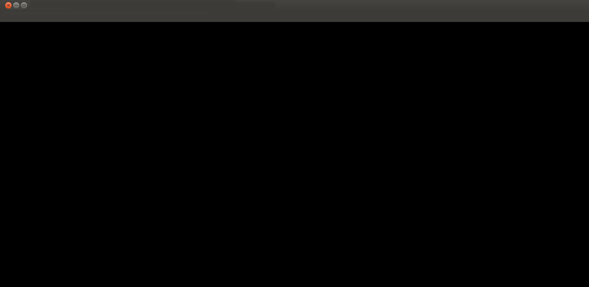

Séries
Séries
Dubladas
Sherlock
1º Temporada
2º Temporada
3º Temporada
01-Um Estudo em Rosa
02-O Banqueiro Cego
03-O Grande Jogo
Baixar
Assistir

Your browser does not support the video tag.
X
Versão MKV 720P Dublado 1,4GB
Escolha um formato e resolução